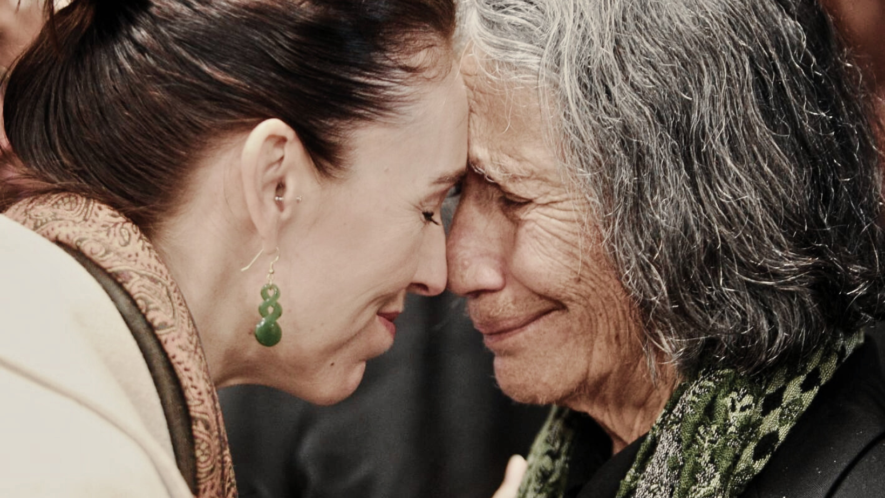

Welcome to New Zealand Tertiary Education Institution
Kia Ora!
At New Zealand Tertiary Education Institution (NZTEI), we do our best to prepare our students for a rewarding and fulfilling career. In Aotearoa, Māori cultural practices are extremely valuable to our nation and considered to be a national pride. We believe that great exposure to the concept of biculturalism means much more than acquiring knowledge.

Access to Exclusive Content
Studying at NZTEI will help you become a stand-out thinker, innovator, and collaborator. If you've read below and are interested in knowing more, get in touch. Submit an inquiry today to start your study journey with NZTEI.

Māori Culture in Aotearoa
Today Māori people live throughout New Zealand, and many are actively involved with keeping their culture and language alive. Within any Māori community, the marae provides a focus for social, cultural and spiritual life. Māori culture is a rich and varied one, and includes traditional and contemporary arts. Traditional arts such as carving, weaving, kapa haka (group performance), whaikorero (oratory) and moko (tattoo) are practised throughout the country.
National Anthem in Te Reo Māori
Te Reo Māori
New Zealand has three official languages: English, Te Reo Māori, and New Zealand Sign Language. English is the primary language; however, around 4% (or 140,000) of people speak Te Reo. This makes it the second most commonly spoken language in New Zealand. The Māori language is considered a national taonga (treasure) and is undergoing a significant revival. Initiatives such as Te Wiki o te reo Māori (Māori Language Week), Kura Kaupapa (Māori language schools from pre-school through to high school) and a Māori Television all playing a role in making sure Te Reo Māori remains a living language embraced throughout New Zealand.
Watch this video about "Te aroha", a Maori waiata (song) about love and peace.
Whakapapa
Whakapapa, or also known as genealogy, is a fundamental principle in Māori culture. Reciting one's whakapapa proclaims one's Māori identity, places oneself in a wider context, and links oneself to land and tribal groupings and the mana of those.

Contact Us
At New Zealand Tertiary Education Institution, we are always keen to help our students. Our friendly Academic and Student Services team are happy to offer advice, support and guidance to help all students meet their goals! Our experienced team can assist you with study plan support and advice, course information sessions, biculturalism programme and more.